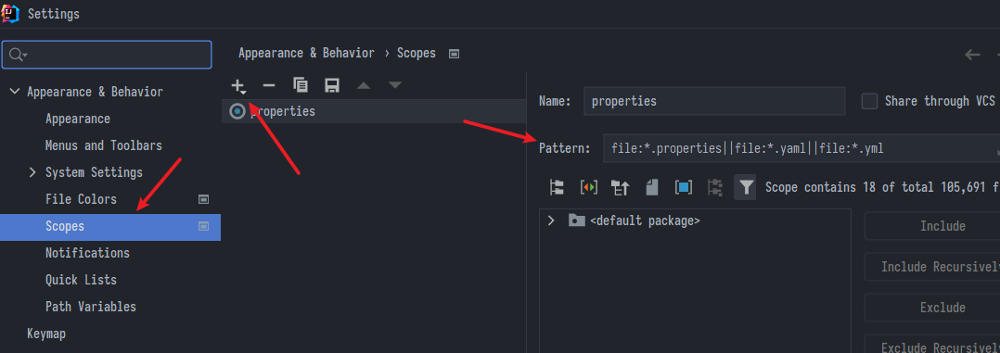
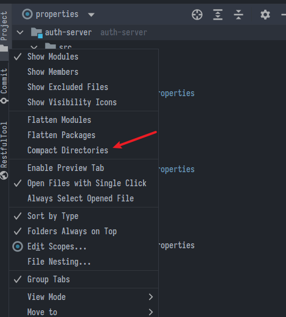
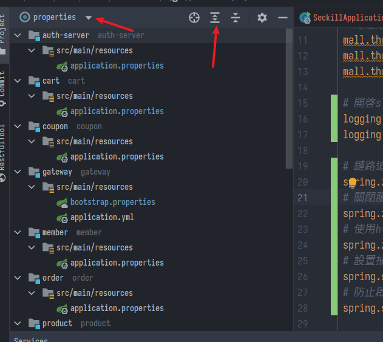

IntelliJ IDEA File scope
IDEA檔案總管篩選類型的方法
IDEA篩選檔案
- IDEA預設的檔案瀏覽器真的很不優，我以前都很蠢的用搜尋然後一個一個翻。原來他還是能做到篩選的，就是步驟挺麻煩
- 首先要去scope裡面自己設定規則，還可以設定顏色之類的，參考官方:
- https://www.jetbrains.com/help/phpstorm/configuring-scopes-and-file-colors.html#predefined-scopes-list
- 一樣記得要設在"用於每個新專案"的設定，否則只會在當前專案生效
- 例如只想顯示設定檔，可以設定規則:
file:*.properties||file:*.yml||file:*.yaml

- 回到檔案瀏覽區，最好勾上compact，省得太多層資料夾會把列表拉得很長

- 切換到自定的scope規則，然後全部展開，就可以快速切換許多子模組的設定了

- 其他實用的篩選還有pom.xml、*config等等，可以自己發揮
上次修改於 2022-02-08